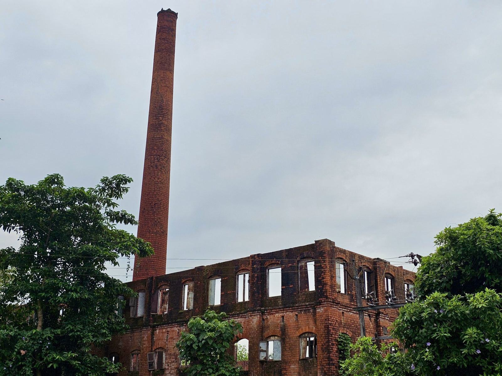

Familjer som haft oss i generationer
Bengt sotade hos oss i 25 år, nu kommer hans dotter. Samma noggrannhet, och nu får vi sms dagen innan.
Gunnel P.BrunfloMurstocken på vår 30-talsvilla var sprucken. De monterade insatsrör på en dag, och vi kunde elda igen samma vecka.
Mattias O.FrösönVi har gården i Föllinge och vedpannan sotas två gånger om året. De kommer alltid när de har sagt.
Anna-Lena J.Föllinge
- Jobba hos oss
Bli skorstensfejare i Jämtland
Vi betalar din utbildning till skorstensfejare och du går bredvid en erfaren kollega första året. Efter tre år kan du läsa vidare till skorstensfejartekniker.
- Illustrationsbild

- ÖstersundSotarlärling
- KrokomSkorstensfejartekniker
- ÖstersundMurare till Skorstensservice
Fredagsfika på Odenskog är heligt, och de flesta som börjar här stannar i över tio år.
- 3lediga tjänster just nu
Vad ska vi titta på hos dig?
Farfar sotade Frösön med cykel och stålborste – i dag sotar vi 14 500 eldstäder i Östersund och Krokom.
Våra tjänster- 01
Sotning
Rengöring av eldstad, rökkanal och tak enligt kommunens sotningsfrister.
- 02
Brandskyddskontroll
Kontroll enligt lagen om skydd mot olyckor, med skriftligt protokoll samma dag.
- 03
Insatsrör
Rostfria insatsrör i 316L när den gamla murstocken inte längre är tät.
- 04
Skorstensrenovering
Nytt murkrön, omfogning och plåtbeslag – med egna murare.
- 05
Kaminmontage
Vi monterar kaminen, gör anmälan och besiktar innan första brasan.
- 06
Fjällstugor
Sotning och kontroll av fritidshus i Bydalen, Ottsjö och Storsjöbygden.
- 07
Prislista
Kommunens sotningstaxa och våra fasta priser för renovering.
- 08
Boka sotning
Ring kundtjänsten eller boka om din tid via sms.

- Illustrationsbild
 Säkerhet på taket
Säkerhet på taketVi går upp på taket först när det är säkert
Alla sotare har fallskyddsutbildning, och vi går inte upp på tak där stege, glidskydd eller nockräcke saknas. Då gör vi en notering i protokollet och hjälper dig med vad som behövs. Sedan 2022 har vi inte haft en enda fallolycka.
Läs om hur vi arbetar- 010fallolyckor sedan 2022
- 02
 4 månför kostnadsfri efterkontroll
4 månför kostnadsfri efterkontroll - 03100 %av sotarna med fallskyddsutbildning